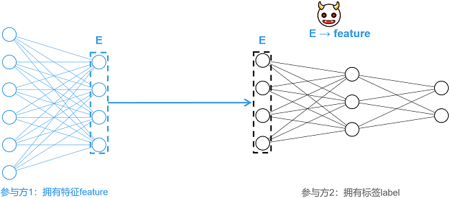
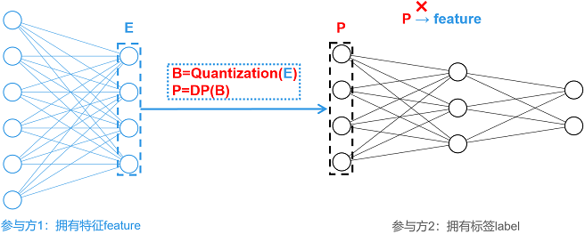
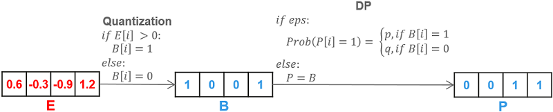

纵向联邦-基于信息混淆的特征保护

背景介绍
纵向联邦学习（vertical Federated Learning, vFL）是一种主流且重要的联合学习范式。在vFL中，n(n≥2)个参与方拥有大量相同用户，但用户特征重叠较小。MindSpore Federated采用拆分学习（Split Learning, SL）技术实现vFL。以下图所示两方拆分学习为例，各参与方并不直接分享原始数据，而是分享经过本地模型提取的中间特征进行训练与推理，满足了原始数据不出本地的隐私要求。
然而，有研究表明[1]，攻击者（例如参与方2）可以通过中间特征（E）还原出对应的原始数据（feature），造成隐私泄露。针对此类特征重构攻击，本教程提供一种基于信息混淆的轻量级特征保护方案[2]。

方案详述
保护方案名为EmbeddingDP，总体如下图所示。对生成的中间特征E，依次施加量化（Quantization）和差分隐私（Differential Privacy, DP）等混淆操作，生成P，并将P作为中间特征发送至参与方2。混淆操作大大降低了中间特征与原始输入之间的相关性，加大了攻击难度。

目前，本教程支持单比特量化和基于随机响应的差分隐私保护，方案细节如下图所示。
单比特量化（Quantization）：对于输入向量E，单比特量化会将其中大于0的数置为1，小于等于0的数置为0，生成二值向量B。
基于随机响应的差分隐私（DP）：差分隐私需要配置关键参数
eps。若未配置eps，则不进行差分隐私，直接将二值向量B作为待传的中间特征；若正确配置eps（即eps为非负实数），eps越大，混淆的概率越低，对数据影响越小，同时，隐私保护力度相对较弱。对二值向量B中的任一维度i，若B[i]=1，则以概率p保持数值不变；若B[i]=0，则以概率q翻转B[i]，即令B[i]=1。其中，概率p和q依据如下公式计算。其中，e表示自然底数。

特性体验
本特性可对一维或二维的张量数组进行处理。一维数组仅可由数字0和1组成，二维数组需由独热编码格式的一维向量组成。在安装MindSpore与Federated后，可应用本特性处理符合要求的张量数组，示例程序如下所示：
import mindspore as ms
from mindspore import Tensor
from mindspore.common.initializer import Normal
from mindspore_federated.privacy import EmbeddingDP
ori_tensor = Tensor(shape=(2,3), dtype=ms.float32, init=Normal())
print(ori_tensor)
dp_tensor = EmbeddingDP(eps=1)(ori_tensor)
print(dp_tensor)
应用案例
保护盘古α大模型跨域训练
准备环节
下载federated代码仓，并依据教程纵向联邦学习模型训练 - 盘古α大模型跨域训练，配置运行环境与实验数据集，而后可根据需要运行单进程或多进程示例程序。
git clone https://gitee.com/mindspore/federated.git
单进程样例
进入样例所在目录，并执行运行单进程样例中第2至4步：
cd federated/example/splitnn_pangu_alpha
启动配置了EmbeddingDP的训练脚本：
sh run_pangu_train_local_embedding_dp.sh查看训练日志
splitnn_pangu_local.txt中的训练loss：2023-02-07 01:34:00 INFO: The embedding is protected by EmbeddingDP with eps 5.000000. 2023-02-07 01:35:40 INFO: epoch 0 step 10/43391 loss: 10.653997 2023-02-07 01:36:25 INFO: epoch 0 step 20/43391 loss: 10.570406 2023-02-07 01:37:11 INFO: epoch 0 step 30/43391 loss: 10.470503 2023-02-07 01:37:58 INFO: epoch 0 step 40/43391 loss: 10.242296 2023-02-07 01:38:45 INFO: epoch 0 step 50/43391 loss: 9.970814 2023-02-07 01:39:31 INFO: epoch 0 step 60/43391 loss: 9.735226 2023-02-07 01:40:16 INFO: epoch 0 step 70/43391 loss: 9.594692 2023-02-07 01:41:01 INFO: epoch 0 step 80/43391 loss: 9.340107 2023-02-07 01:41:47 INFO: epoch 0 step 90/43391 loss: 9.356388 2023-02-07 01:42:34 INFO: epoch 0 step 100/43391 loss: 8.797981 ...
多进程样例
进入样例所在目录，安装依赖包，并配置数据集：
cd federated/example/splitnn_pangu_alpha python -m pip install -r requirements.txt cp -r {dataset_dir}/wiki ./
在服务器1启动配置了EmbeddingDP的训练脚本：
sh run_pangu_train_leader_embedding_dp.sh {ip1:port1} {ip2:port2} ./wiki/train ./wiki/train
ip1和port1表示参与本地服务器（服务器1）的IP地址和端口号，ip2和port2表示对端服务器（服务器2）的IP地址和端口号，./wiki/train是训练数据集文件路径，./wiki/test是评估数据集文件路径。在服务器2启动另一参与方的训练脚本：
sh run_pangu_train_follower.sh {ip2:port2} {ip1:port1}
查看训练日志
leader_process.log中的训练loss：2023-02-07 01:39:15 INFO: config is: 2023-02-07 01:39:15 INFO: Namespace(ckpt_name_prefix='pangu', ...) 2023-02-07 01:39:21 INFO: The embedding is protected by EmbeddingDP with eps 5.000000. 2023-02-07 01:41:05 INFO: epoch 0 step 10/43391 loss: 10.669225 2023-02-07 01:41:38 INFO: epoch 0 step 20/43391 loss: 10.571924 2023-02-07 01:42:11 INFO: epoch 0 step 30/43391 loss: 10.440327 2023-02-07 01:42:44 INFO: epoch 0 step 40/43391 loss: 10.253876 2023-02-07 01:43:16 INFO: epoch 0 step 50/43391 loss: 9.958257 2023-02-07 01:43:49 INFO: epoch 0 step 60/43391 loss: 9.704673 2023-02-07 01:44:21 INFO: epoch 0 step 70/43391 loss: 9.543740 2023-02-07 01:44:54 INFO: epoch 0 step 80/43391 loss: 9.376131 2023-02-07 01:45:26 INFO: epoch 0 step 90/43391 loss: 9.376905 2023-02-07 01:45:58 INFO: epoch 0 step 100/43391 loss: 8.766671 ...
参考文献
[1] Erdogan, Ege, Alptekin Kupcu, and A. Ercument Cicek. “Unsplit: Data-oblivious model inversion, model stealing, and label inference attacks against split learning.” arXiv preprint arXiv:2108.09033 (2021).
[2] Anonymous Author(s). “MistNet: Towards Private Neural Network Training with Local Differential Privacy”. (https://github.com/TL-System/plato/blob/2e5290c1f3acf4f604dad223b62e801bbefea211/docs/papers/MistNet.pdf)